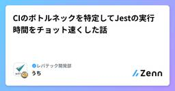
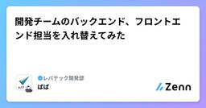
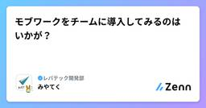
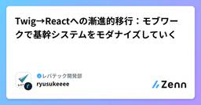
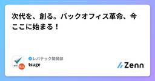
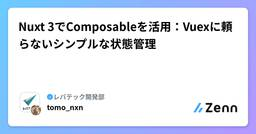
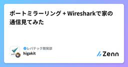
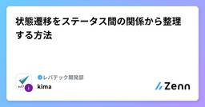
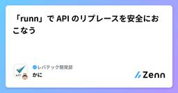

レバテック開発部のフィード
https://zenn.dev/p/levtech
レバテック開発部の公式テックブログです！ レバテック開発部 Advent Calendar 2024 実施中: https://qiita.com/advent-calendar/2024/levtech
フィード

CIのボトルネックを特定してJestの実行時間をチョット速くした話
レバテック開発部のフィード
この記事は「レバテック開発部 Advent Calendar 2024」の 21 日目の記事です！昨日の記事は、ばば さんの「開発チームのバックエンド、フロントエンド担当を入れ替えてみた」でした！ はじめにこんにちは、7月末からレバテックにJoinしました、大内です。不慣れなことも多いですが、周りからいろんな刺激をもらいながら日々楽しく開発してます！参加しているプロダクトのGitHub Actions（以下GHA）で、結合テストの実行速度が遅くなっていて、バックエンドの改修をデプロイするスピードに影響がでそうな状態だったので、あまり時間をかけずにチョットだけ速度改善する応急対...
2時間前

開発チームのバックエンド、フロントエンド担当を入れ替えてみた
レバテック開発部のフィード
この記事は「レバテック開発部 Advent Calendar 2024」の 20 日目の記事です！昨日は みやてく さんが担当していました！ はじめにこんにちは！レバテック開発部の新卒領域で開発チームリーダーを担当している馬塲です。普段はチーム内の開発スケジュールの作成やエンジニアのマネジメントを担当しつつ、私自身も開発に注力しています。最近開発チームの担当領域（バックエンド、フロントエンド）を入れ替えてスクラムを実施してみたので、チーム内で起きたことを紹介していければと思います！ チーム概要スクラムチーム内のエンジニアは正社員3人、業務委託2人で構成されています。...
1日前

モブワークをチームに導入してみるのはいかが？
レバテック開発部のフィード
この記事は「レバテック開発部 Advent Calendar 2024」の 19 日目の記事です！昨日の記事は、ryusukeeeeさんの「Twig→Reactへの漸進的移行：モブワークで基幹システムをモダナイズしていく」でした。 これはなにこんにちは！レバテック開発部の宮下です。モブワークを私たちの開発チームに導入した結果、協力的な開発が進み、多くの利点を感じました！！本記事では、モブワークを導入した理由や実際に感じた利点に加えて、直面した課題について触れていきますー！ 対象読者チームでの協力やコミュニケーションを強化したいと考えている方！モブワークやペアプロな...
2日前

Twig→Reactへの漸進的移行：モブワークで基幹システムをモダナイズしていく
レバテック開発部のフィード
この記事は「レバテック開発部 Advent Calendar 2024」の 18 日目の記事です！昨日は tsuge さんが担当していました！ はじめにこんにちは、レバテック開発部の岡田ですレバテックの営業さんが利用する社内営業支援システムの開発保守運用をやってます！レバテックを支えていると言っても過言ではない大きなシステムですシステムのバックエンド側はPHPとLaravelで動いており、フロント側はTwigというテンプレートエンジンを使っています最近、フロント部分をReact化していく活動をしているので、この記事ではなぜ進めているのかや具体的な対応内容を書いていこうと思...
3日前

次代を、創る。バックオフィス革命、今ここに始まる！
レバテック開発部のフィード
この記事は「レバテック開発部 Advent Calendar 2024」の 10 日目の記事です！昨日は higaki さんが担当していました！ 記事で紹介すること弊社バックオフィスの問題開発側の問題へのアプローチこれまでの実績今後の構想 この記事で書かないこと今回は、技術的な内容についてはほとんど記載しません。ただ、直近で携わっている新規プロジェクトの技術選定フェーズでは面白いネタが結構あるので、またどこかの機会でご紹介します！ 自己紹介はじめまして、今年の4月に中途入社しました、レバテック開発部のつげです！入社後は、企画・要件定義・設計の上流工程から...
4日前

Nuxt 3でComposableを活用：Vuexに頼らないシンプルな状態管理
レバテック開発部のフィード
これはなに？本記事は、Nuxt 3においてVuexなどの外部ライブラリを使わず、Composableを活用して状態管理を行うベストプラクティスを紹介するものです。従来、Vue 2系のアプリケーションでは、状態管理といえばVuexがほぼデファクトスタンダードでした。しかし、Nuxt 3（+ Vue 3）の時代になると、Composition APIが標準化され、状態管理に特化した外部ツールに依存しなくても、柔軟かつシンプルにグローバルな状態を扱えるようになっています。本記事では、実際のプロジェクトで「Vuexを使わずにComposableで全てを管理」した経験をベースに、実装例など...
5日前

ポートミラーリング + Wiresharkで家の通信見てみた
レバテック開発部のフィード
この記事は「レバテック開発部 Advent Calendar 2024」の 16 日目の記事です！昨日の記事は、kima さんが担当していました！ はじめに家のネットワーク通信が見たいなーの気持ちが抑えられなくなりました。そこで、どうにかして見れないかを試してみた記事です。 対象読者ネットワーク興味がある方オンライン対応のゲーム機やAmazon Echoなどの機器の通信を見たい人（実際の通信データは暗号化されていて見えません） どんな感じ？ゲーム機のIPアドレスWiresharkで通信が見えている誰と通信してるのか認識できていい感じです！！！...
5日前

状態遷移をステータス間の関係から整理する方法
レバテック開発部のフィード
この記事は「レバテック開発部 Advent Calendar 2024」の15日目の記事です！昨日はかにさんが担当していました！ はじめにenumのようなものでステータスを管理することはよくあるかと思います。タスクの状態や、営業の状態、注文の状態など、多岐にわたる状態管理でenumを使ったステータス管理は便利です。しかし、このようなステータスは便利ですが、ビジネスの変化や新機能の追加によって、状態管理が難しくなり、保守性に困ることがあります。この記事では、保守性を向上させるためにenumのステータスを整理する方法を三つ提案します。これによってステータス管理の課題を避けられ...
6日前

「runn」で API のリプレースを安全におこなう 2
2
レバテック開発部のフィード
この記事は「レバテック開発部 Advent Calendar 2024」の 14 日目の記事です！昨日の記事は、dema96さんの「E2Eテストのテスト範囲と優先順位を考えてみた」でした。 TL;DRAPI のリプレースを計画しているが、更新系の API の同等性検証をどうやるか悩んでいたAPI シナリオテストツール「runn」の「HTTP の API を実行する機能」と「データベースへのクエリを実行する機能」を使って、更新系 API の同等性検証をやってみた実務で活用に向けてより詳細な検証が必要だが、API 実行後のデータベースの状態の検証やデータ駆動テストなど、API ...
7日前

E2Eテストのテスト範囲と優先順位を考えてみた
レバテック開発部のフィード
この記事は「レバテック開発部 Advent Calendar 2024」の 13日目の記事です！昨日の記事は、ないとー さんの「営業組織を救え！Chrome 拡張「工数入力くん」で日々の工数管理を効率化」でした。 TL;DRE2Eのテスト範囲はユーザーストーリーで考えるユーザーストーリーごとに発生するリスクごとに優先順位を付けると戦略が立てやすくなる はじめにレバテック開発部の江間です。現在レバテック開発部では自動E2EテストにAutifyを使っています。私はAutify導入の旗振りをさせてもらってます。導入経緯や選定理由は過去の記事をご参照ください。Autify...
8日前
営業組織を救え！Chrome 拡張「工数入力くん」で日々の工数管理を効率化
レバテック開発部のフィード
この記事は「レバテック開発部 Advent Calendar 2024」の 12 日目の記事です！昨日の記事は、azm さんの「手戻りを減らしたくて職種間コミュニケーションハードルを下げる活動をした話」でした。 TL;DR営業組織の拡大により、「運用工数の可視化」が課題となっているそこで、Google Calendar と連携し、予定作成時に工数データを簡単に入力できる Chrome 拡張機能を開発中2025 年 1 月からベータ版として運用を開始し、フィードバックを基に改善を進める予定 はじめにこんにちは、新卒 2 年目も終盤を迎え、いつまで新卒 x 年目と言おう...
9日前
FlutterKaigi 2024で知ったツール、技術をまとめてみる
レバテック開発部のフィード
はじめにFlutterKaigi 2024に参加し、Flutterの技術やツールに関する知見や各社の取り組みを間近で体感してきました。本記事では、得た知見の中でFlutter開発する上であると便利なツールや技術にフォーカスを当てて3つほど紹介してみようと思います。以下リンク先はセッションの配信時の動画になります。Figma Devmode & Cursor : Figma Dev Modeで変わる！Flutterの開発体験Shorebird : 体験！マクロ時代のFlutterアプリ開発Dart Macros ： Shorebirdを活用したFlutt...
9日前
手戻りを減らしたくて職種間コミュニケーションハードルを下げる活動をした話
レバテック開発部のフィード
この記事は「🎄レバテック開発部 Advent Calendar 2024🎄」の 11 日目の記事です🤶⭐️昨日の記事は きょうか さんの「モノリシックなシステムの保守開発のツラミと面白さ」でした🐱こんにちは、レバテック開発部の小豆畑です。普段はオウンドメディアの運用や改善を行っています。 TL;DR「プランナーが考えた要件が降りてきて開発が実装し価値を提供する」という流れの中で、手戻りが発生していました。それに対して、各々の役割の認識を合わせて、必要なコミュニケーションをとっていこうよという働きかけをしました。より早い段階でのコミュニケーションが増えて手戻りは減っ...
10日前
モノリシックなシステムの保守開発のツラミと面白さ
レバテック開発部のフィード
この記事は「レバテック開発部 Advent Calendar 2024」の 10 日目の記事です！昨日は タカハシ さんが担当していました！こんにちは。レバテック開発部のきょうかです。レバテックの社内業務用システムの保守開発を担当しています。本記事では、これまでの保守開発の中で遭遇したツラミ(課題)とツラミ解消の取り組み、ツラミから感じた 面白さについて書いていきます。 どんなシステム？私が担当しているシステムは、営業、マーケティング、管理、経理など、さまざまな部署が使用する社内向けの業務システムです。レバテックでは複数の事業を展開していますが、それらで使用するデータを一...
11日前
元営業マン、現エンジニアが語る：両職種の架け橋になるために
レバテック開発部のフィード
この記事は「レバテック開発部 Advent Calendar 2024」の 9 日目の記事です！昨日の記事は、t_shiba さんの「システムディレクターがコミュニケーションで大事にしていること3選」でした。 これはなに元営業マン、現エンジニアが書いた、営業からちょっと信頼してもらい易くなるための記事です。私は営業として3年ほど働いたことがあり、その時、一緒に働いていたエンジニアサイドへの不満がありました。しかし、エンジニアとなった今は、それがエンジニアへの無理解や誤解によるものだったと思っています。同じように、エンジニアの立場になってみると、逆に営業のことを理解できない人もい...
12日前
たくさんのpmにお悩み相談してきました！【pmconfブース運営レポート】
レバテック開発部のフィード
はじめにレバテックでは先日のpmconfにてブースを出展させていただきました！ご来場いただきました皆様ありがとうございました！今回のブースは 「レバテックのプロダクトマネジメントの悩みにお知恵をお貸しください」 というテーマでしたが、たくさんの方にご意見やアドバイスをいただいたため、そのまとめ記事を書かせていただきます！!なおこの記事でpmと書いているところは全てプロダクトマネージャーを表しています！↓このように用意していたボードを埋め尽くすほどのアドバイスをいただきました！ お悩みNo1：「技術的負債解消」と「機能開発」のバランスが難しい... 全体的にま...
12日前
システムディレクターがコミュニケーションで大事にしていること3選
レバテック開発部のフィード
この記事は「レバテック開発部 Advent Calendar 2024」の 8 日目の記事です！昨日の記事は、yujik さんの「新チームを任されてから起きた課題9選」でした。 はじめにこんにちは！レバテック開発部でシステムディレクターをしている柴﨑です！システムディレクターの業務特性上、開発組織内外を問わずに調整業務が非常に多く、営業部の方々にも引けを取らないくらい多くの人とコミュニケーションをとります。今回はそのコミュニケーションにおいて、私が大事にしていることを3つお伝えできたらと思います！あくまで、調整業務を円滑に進めるために私個人が意識していることである点をご留意...
13日前
新チームを任されてから起きた課題9選
レバテック開発部のフィード
この記事は「レバテック開発部 Advent Calendar 2024」の 7 日目の記事です！昨日の記事は、ytksjp さんの「元PythonエンジニアがRustのRocket+SQLxでWebAPI書いてみた」でした。 これはなに社内SFAを開発するチームに所属しているのですが、認知負荷低減・管理コスト低減を目的にチームが分割され、特定ドメイン配下の改修依頼を担当することになりました。チーム分割により、好き勝手なやり方が出来る！と喜んだのも束の間、チーム運営に関する課題を多発させてしまったので、同じ轍を踏まないためにも起きた問題と対応を振り返ろうと思います。※スクラム用...
14日前
元PythonエンジニアがRustのRocket+SQLxでWebAPI書いてみた
レバテック開発部のフィード
この記事は「レバテック開発部 Advent Calendar 2024」の 6 日目の記事です！昨日の記事は、gorilla_swe さんの「【入社エントリ】レバテックで過ごした4ヶ月を振り返る」でした。 1. はじめに 自己紹介はじめまして！レバテック開発部の高瀬と申します!今年の10月からレバレジーズに参画し、現在はレバテック開発部で社内SFAの開発に携わっています。前職では主にPythonを使ったWeb APIの開発を担当していました。そんな私が今回、レバテック開発部のアドベントカレンダーに参加するにあたり、テーマとして以前から興味があったRustを使った簡単なW...
15日前
【入社エントリ】レバテックで過ごした4ヶ月を振り返る
レバテック開発部のフィード
この記事は「レバテック開発部 Advent Calendar 2024」の 5 日目の記事です！昨日の記事は、daijinload さんの「チーム開発とアーマードコアが似ている気がする」でした。 はじめにはじめまして！レバテック開発部でエンジニアをしている松浦です。2024年8月に入社し、あっという間に4ヶ月が経ちました。この4ヶ月間は初めてのことが多く大変なこともありましたが、その分たくさんの発見や学びがあり、非常に充実した時間を過ごしています。この記事では、私がレバテック開発部に入社してからの業務内容や、その中で感じた職場の魅力について紹介します。一人でも多くの方に、レ...
16日前